Risques sectoriels et bonnes pratiques
Cette page applique la démarche d'appréciation et de réduction des risques à des équipements et secteurs spécifiques fréquents en milieu industriel et minier : convoyeurs, robots, électricité, bruit, Espaces clos, chariots élévateurs, quais de transbordement, nettoyage haute pression. Pour chacun, les phénomènes dangereux dominants et les bonnes pratiques sont synthétisés, avec les références normatives.
Table des matières
- Secteurs particuliers, vue d'ensemble
- Convoyeurs à courroie
- Robots industriels et cobots
- Risque électrique
- Bruit en milieu de travail
- Espaces clos
- Chariots élévateurs
- Quais de transbordement
- Nettoyage et nettoyage haute pression
- Statistiques d'accidents au Québec
- Application terrain
- Ressources
Secteurs particuliers, vue d'ensemble
Caractéristiques communes : géométrie variable, structures temporaires, machinerie lourde + piétons, travail isolé.
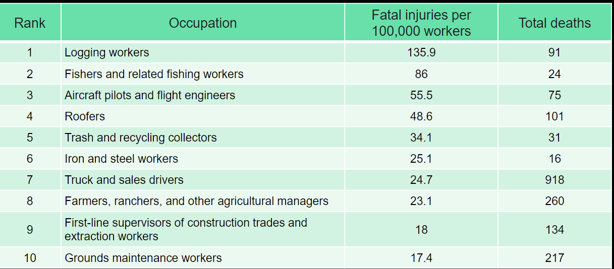
Toucher l'image pour l'agrandir| Secteur | Règlement spécifique | Risques dominants |
|---|---|---|
| Construction | CSTC (S-2.1, r.4) | Chutes de hauteur, effondrement, ensevelissement, heurts |
| Mines | RSSM (S-2.1, r.14) | Chutes de roches, isolement, bruit jackleg (120-130 dBA), gaz |
| Forêt | RSSTAF (S-2.1, r.17) | Tronçonneuse, chicots, isolement, scierie (poussière fine) |
| Recyclage | RSST général | Convoyeurs, tri manuel, métier émergent |
| Agriculture | RSST général | Taux de décès très élevé (9,12 / 100 000) |
Shut-downs : coactivité travailleurs réguliers / externes, échéancier court. Exemple Irving 2015 : 200 M$, 60 jours, 3000 externes.
Cas Maçonnerie CPM (20 janvier 2020) : effondrement d'un bâtiment résidentiel, 3 travailleurs ensevelis.
Cas scierie Babine Forest Products (janvier 2012) : 2 morts, 20 blessés, explosion de poussière de bois extrafine.
Convoyeurs à courroie
Référence : Guide CNESST, analyse IRSST de 111 accidents.
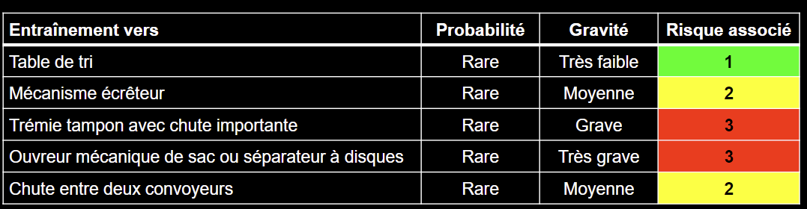
Toucher l'image pour l'agrandirRépartition des accidents
- Tambours de tête/pied ou mécanisme de transmission : 49 %
- Rouleaux porteurs ou de retour : 10 %
- Lors de maintenance : 26 % + 13 % (déblocage), dont 32 % en nettoyage
- Production : 14 %
Par définition, un convoyeur est dangereux : chaque contact courroie/rouleau forme un angle rentrant (voir Hiérarchie des moyens de prévention › Étape 2a, protecteurs fixes et mobiles).
Exemple de protecteur fixe enveloppant adapté à un convoyeur.
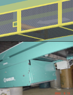
Toucher l'image pour l'agrandirEt protecteur fixe de maintien à distance.
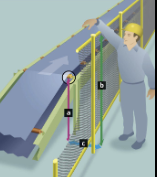
Toucher l'image pour l'agrandirLes zones d'inflexion sont des points particulièrement critiques.
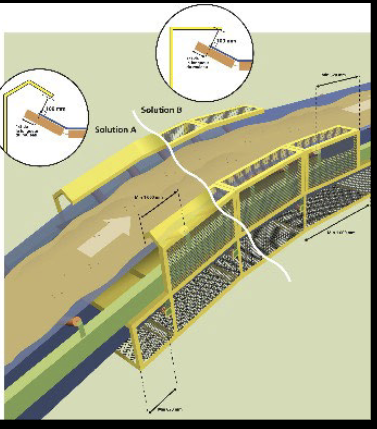
Toucher l'image pour l'agrandirPrévention intrinsèque
- Privilégier la courroie lisse plutôt que crantée ou à tasseaux.
- Remplacer le frottement de glissement par du roulement.
- Sole de glissement, patins glissants pour éliminer les angles rentrants.
Phénomènes : transmission (entraînement, happement, écrasement), zones de coincement (trémie, lisse, bavette), charges en déplacement, sous-ensembles mobiles (éjecteur).
Protecteurs adaptés : fixe enveloppant, fixe de maintien à distance, fixe d'angle rentrant, mobile à verrouillage.
Robots industriels et cobots
Référence : CSA Z434-14, ISO 10218-1 et 10218-2 (2011), ISO/TS 15066 (collaboratifs).
Définition : manipulateur reprogrammable à 3 axes ou plus, multiapplications, fixe ou mobile.
Architecture : manipulateur, système de commande, pendant d'apprentissage, interfaces. Espaces de protection (max, restreint, opérationnel).
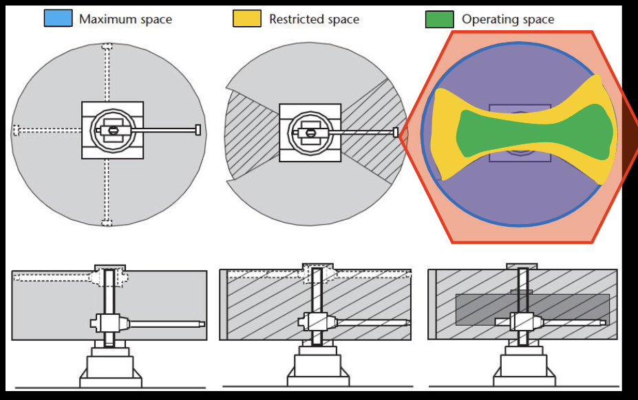
Toucher l'image pour l'agrandirProtection
- Dispositifs de limitation : axes, vitesse, espace.
- Vitesse réduite en mode apprentissage.
- Pendant d'apprentissage avec dispositif de validation (homme mort).
- Barrages immatériels, scanners pour zones d'approche.
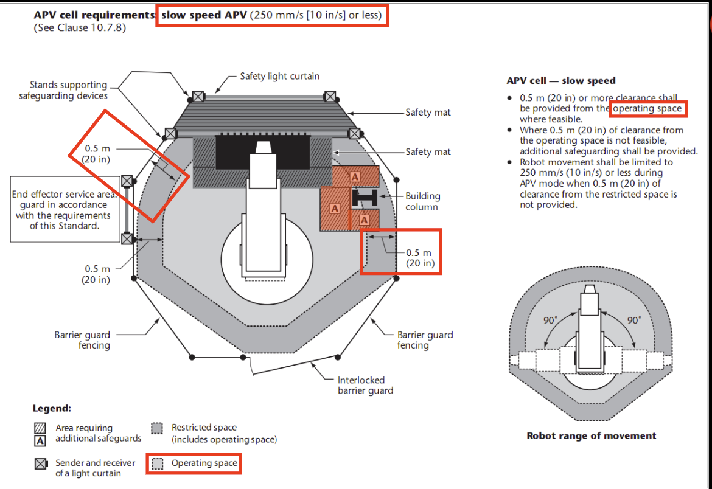
Toucher l'image pour l'agrandirRobots collaboratifs (cobots) : 4 modes ISO/TS 15066
- Arrêt nominal de sécurité.
- Guidage manuel.
- Contrôle de vitesse et distance de séparation.
- Limitation de puissance et force.
Exemple historique : Baxter (Rethink Robotics).
Risque électrique
Référence : CSA Z462 (sécurité électrique au travail), CSA C22.1 (Code canadien), RSST Section IX.
Statistiques Québec : 5 décès/an et 316 lésions/an en moyenne. 56 % travaux sur installation, 28 % contact ligne, 6 % mise sous tension.
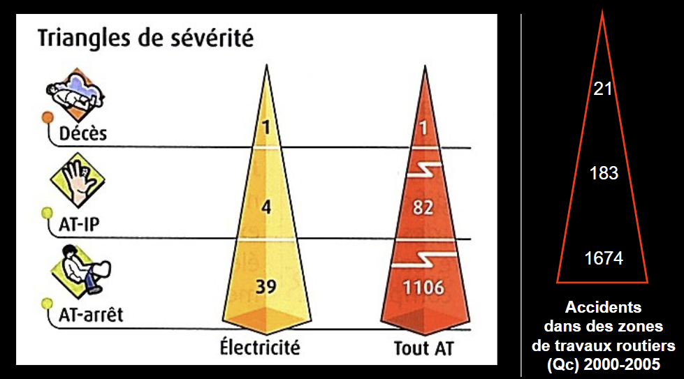
Toucher l'image pour l'agrandirTrois familles de dommages
- Électrisation/électrocution (effets : tétanisation, fibrillation, brûlures internes).
- Arc électrique (brûlure, projection, onde de choc).
- Incendie/explosion d'origine électrique.
Effets du courant sur le corps
| Intensité | Effet |
|---|---|
| 1 mA | Perception |
| 10 mA | Tétanisation (impossible de lâcher) |
| 30 mA | Seuil de paralysie respiratoire |
| 75 mA | Fibrillation ventriculaire |
Prévention
- Contacts directs : isolation, éloignement, obstacles, basse tension.
- Contacts indirects : mise à la terre, disjoncteur différentiel, double isolation, séparation.
- Norme CSA Z462 : zones d'approche (limite, restreinte, interdite), EPI selon catégorie d'arc (Cal/cm²), procédure de mise hors tension.
Zones d'approche selon CSA Z462.
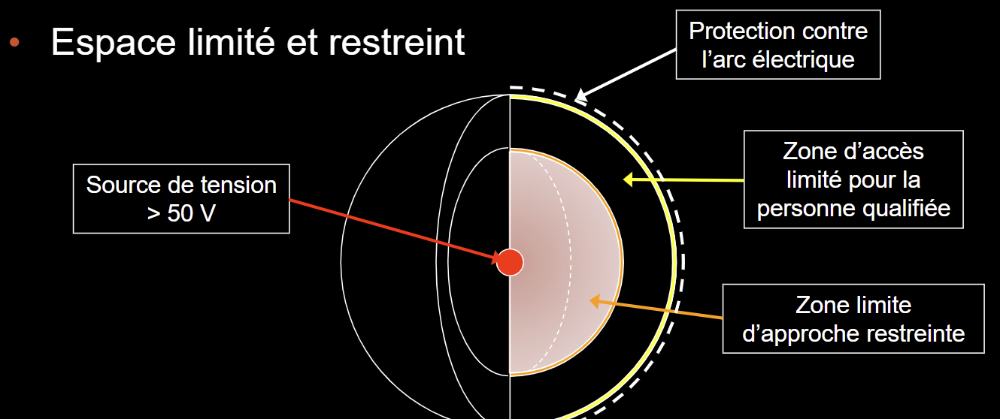
Toucher l'image pour l'agrandirTravailler hors tension est toujours la solution privilégiée (voir Hiérarchie des moyens de prévention › Étape 2c, cadenassage et alternatives).
Bruit en milieu de travail
Référence : RSST Section XV (art. 131-141, modifié 16 juin 2023).
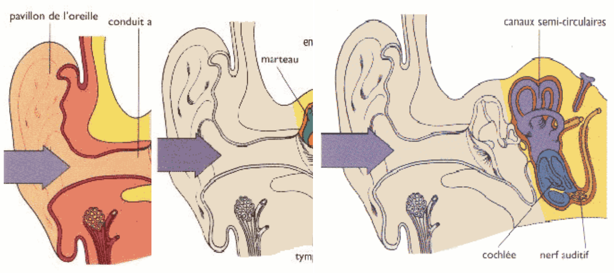
Toucher l'image pour l'agrandirValeurs limites
| Durée | Niveau |
|---|---|
| 8 h | 85 dBA (avant 2023 : 90 dBA) |
| 2 h | 91 dBA |
| 30 min | 97 dBA |
| Avec EPI, niveau résiduel cible | 75-80 dBA |
Articles clés
- RSST art. 132 : éliminer/réduire à la source à la conception.
- RSST art. 133 : évaluation aux 5 ans des situations en dépassement.
Moyens de réduction (hiérarchie)
- Amont : remplacement, réparation, modification du procédé, aménagement.
- Source : silencieux, contrôle actif, tamis polyuréthane (gain 10 dBA).
- Propagation : encoffrement (jusqu'à 21 dBA), absorption acoustique, isolation vibratoire.
- Réception : cabines vitrées, protection auditive individuelle.
Loi de propagation : doublement de la distance = -6 dBA en champ libre.
Voir aussi Bruit en milieu de travail (Hygiène) pour la démarche complète d'évaluation.
Espaces clos
Voir Gestion des risques en entreprise › Programme de gestion des espaces clos et la page dédiée Espaces clos (Hygiène).
Référence : RSST Section XXVI (modifiée 25 juillet 2023), CSA Z1006.
Définition mise à jour : espace totalement ou partiellement fermé avec au moins un des risques : atmosphère (asphyxie, intoxication, incendie/explosion), ensevelissement, noyade/entraînement.
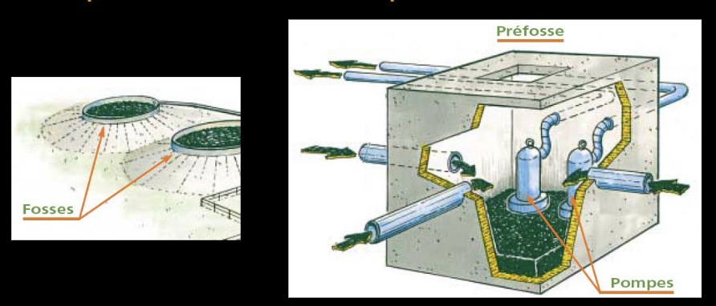
Toucher l'image pour l'agrandirProcédure d'entrée
- Identifier l'espace et les phénomènes dangereux.
- Plan de sauvetage (RSST art. 309).
- Mesures atmosphériques (O₂ entre 20,5 % et 23 %, LIE, contaminants, H₂S, CO).
- Ventilation forcée si nécessaire.
- Surveillant à l'extérieur avec moyens bidirectionnels.
- Permis d'entrée.
- EPI (harnais, Protection respiratoire (APR) avec adduction d'air si nécessaire).
Limites d'explosivité (LIE/LSE) à connaître pour les atmosphères inflammables.
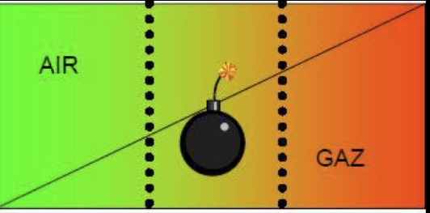
Toucher l'image pour l'agrandirChariots élévateurs
Référence : RSST art. 256 (modifié 2007), CSA B335-15, ASME B56.1.
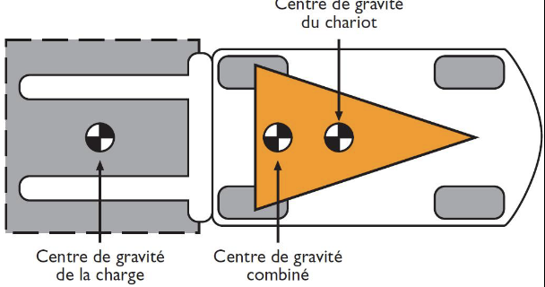
Toucher l'image pour l'agrandirDonnées : 14 décès Mars 1986 - juin 1990 au Québec. Au R.-U. 2015-2016, 1600 / 72 702 accidents.
RSST art. 256.1 : dispositif de retenue obligatoire (ceinture, portes, cabine) pour chariot en porte-à-faux à grande levée à poste centré non élevable avec cariste assis.
RSST art. 256.2 : âge minimal de 16 ans.
RSST art. 256.3 : formation théorique (notions, milieu, conduite, sécurité) + formation pratique sous supervision d'un instructeur, adaptée à l'environnement et au type de chariot.
RSST art. 261 : levage d'un travailleur seulement selon ASME B56.1, avec harnais (art. 347-348).
Risques
- Collision chariot-piéton.
- Renversement (porte-à-faux).
- Chute de charge.
- Chargement/déchargement de batteries (H₂, poids).
- CO, CO₂ avec moteurs thermiques.
- Manœuvres aux quais.
Quais de transbordement
Référence : RSST Section XXIII, outil Doc-Quais (IRSST DT-1148).
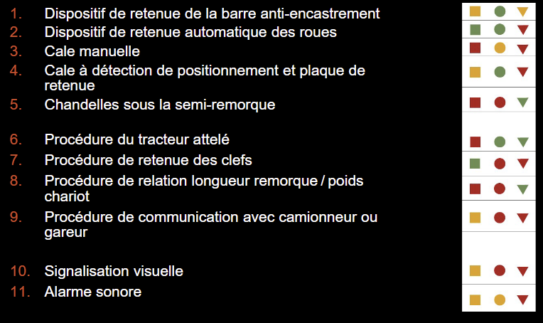
Toucher l'image pour l'agrandirTrois événements dangereux principaux
- Départ inopiné de la remorque pendant le chargement.
- Glissement du tracteur.
- Basculement de la remorque.
11 mesures de retenue
- Dispositif de retenue de la barre anti-encastrement
- Dispositif de retenue automatique des roues
- Cale manuelle
- Cale à détection avec plaque de retenue
- Chandelles sous la semi-remorque
- Procédure du tracteur attelé
- Procédure de retenue des clés
- Procédure longueur semi-remorque / poids chariot
- Procédure de communication avec camionneur ou gareur
- Signalisation visuelle (feux rouge/vert)
- Alarme sonore
L'outil Doc-Quais permet d'évaluer la combinaison de mesures à utiliser.
Nettoyage et nettoyage haute pression
Le nettoyage est sous-estimé : 26 % + 13 % des accidents convoyeurs surviennent en maintenance/nettoyage.
Nettoyage haute pression (> 25 MPa)
- Phénomène dangereux : jet d'eau (250-3000 bars), projection, recul, électricité.
- Dommages : lacération profonde, infection, amputation, électrisation, perte d'équilibre.
Accidents typiques (CNESST) : EN004070, EN004266, EN004277, EN003749, EN004189. Causes récurrentes : absence de cadenassage, mauvaise communication, EPI inadéquats, isolation incomplète des énergies.
Prévention
- Procédure cadenassage en mine de la machine (voir Hiérarchie des moyens de prévention › Étape 2c, cadenassage et alternatives).
- Buse à déclenchement maintenu, gâchette de sécurité.
- Procédure écrite, formation, EPI (botte, visière, combinaison).
- Périmètre de sécurité.
Statistiques d'accidents au Québec
Au Québec : 8,5 M de personnes, environ 180 décès et 104 732 lésions (2022).
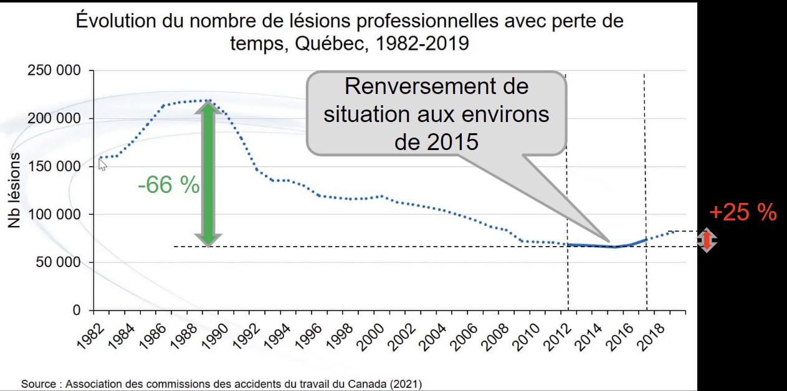
Toucher l'image pour l'agrandirDéfinitions CNESST
- SCIAN : Système de classification des industries de l'Amérique du Nord.
- Type d'entreprise : selon SCIAN.
- Degré de risque : classification CNESST (faible, moyen, élevé).
5 genres d'accidents les plus fréquents
- Effort excessif (manutention)
- Chute au même niveau
- Frappé par un objet
- Coincé dans/sous
- Chute à un niveau inférieur
Mise en garde : les indicateurs CNESST sont des indicateurs tardifs (voir Gestion des risques en entreprise › Indicateurs, tardifs vs avancés). Un faible taux ne garantit pas une bonne prévention.
Obstacles à l'acceptation d'une lésion : présomption, lésion vs maladie, lien avec le travail, délais de déclaration.
Application terrain
Risques sectoriels typiques en mine
| Risque | Spécificité minière | Levier principal |
|---|---|---|
| Convoyeurs à courroie | Concentrateur, longues distances, accès difficile | Audit annuel des protecteurs, cadenassage rigoureux |
| Équipement mobile lourd (camions, scoops) | Visibilité, géométrie de rampe, coactivité piétons | Détection de proximité, plan de circulation, ségrégation |
| Risque électrique | Sous-stations haute tension, équipement mobile, foudre en surface | CSA Z462, équipe habilitée, cadenassage doublé |
| Bruit jackleg / scoop / sauteur | 120-130 dBA au foreur, durée d'exposition | Substitution (foreuse mécanisée), encoffrement, double protection |
| Espaces clos miniers | Silos, conduits de ventilation, chantiers borgnes | Programme dédié, sauvetage minier disponible |
| Chariots élévateurs | Magasin, atelier mécanique | Formation pratique en environnement réel |
| Nettoyage HP | Concentrateur, équipement | Procédure documentée, EPI complet, périmètre |
Cas particuliers du secteur minier
- Chute de roches : tolérance zéro CNESST n°9. Plan de soutènement, écaillage mécanisé, contrôle de la qualité du tir.
- Gaz souterrains : CO, NO2 post-sautage, méthane dans certains gisements. Ventilation principale + détecteurs personnels.
- Sauvetage minier : équipe formée, équipement BG4, exercices, coordination CNESST.
- Travail isolé : protocole d'appel, dispositif homme-mort sur certains équipements.
Souterrain vs surface : en souterrain, les distances de secours sont longues, les voies d'évacuation limitées, et la coordination avec le sauvetage minier devient un facteur de planification central pour tout chantier à risque.
Ressources
| Document | Type | Source |
|---|---|---|
| RSSM (S-2.1, r.14) | Règlement | LégisQuébec |
| CSTC (S-2.1, r.4) | Règlement | LégisQuébec |
| CSA Z434-14 (robots) | Norme | CSA |
| CSA Z462 (sécurité électrique) | Norme | CSA |
| CSA B335-15 (chariots) | Norme | CSA |
| CSA Z1006 (espaces clos) | Norme | CSA |
| Outil Doc-Quais (IRSST DT-1148) | Logiciel | IRSST |
| Statistiques CNESST, rôles et pouvoirs annuelles | Données | CNESST |
Articles wiki connexes
- [[Wiki Sécurité industrielle/20 - Articles internes/30 - Ris
Pages qui pointent ici (9)
- 🎯 Démarrage rapide, conseiller SST Sécurité industrielle
- 🏠 Wiki Sécurité industrielle, mines Sécurité industrielle
- art-132-RSST Sécurité industrielle
- art-133-RSST Sécurité industrielle
- art-256-RSST Sécurité industrielle
- art-256.1-RSST Sécurité industrielle
- art-261-RSST Sécurité industrielle
- art-309-RSST Sécurité industrielle
- Risques mécaniques et opérations Sécurité industrielle